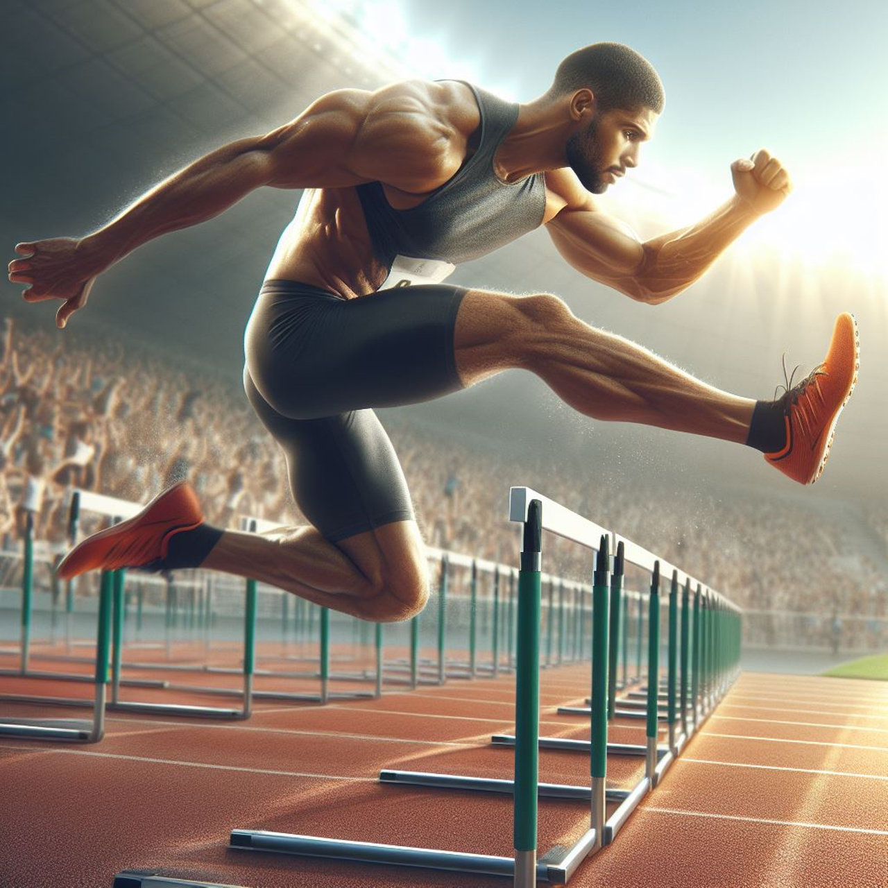

Fique Por Dentro de Todas as Notícias Do esporte que você gosta
Olá, meu nome é Edson e sou apaixonado por tecnologia e esportes decidi criar esse site para ajudar todos amantes de esportes a ficarem por dentro de todas as noticias do esporte que você se interessa,vou me dedicar para melhorar esse site sempre que possivel.
o que faz o atleta ter sucesso?
O sucesso de um atleta é resultado de um conjunto de fatores que vão muito além do talento natural. A disciplina, a dedicação e a constância nos treinamentos são fundamentais para alcançar bons resultados e evoluir continuamente. Além da preparação física, o desenvolvimento psicológico também exerce um papel importante, pois concentração, equilíbrio emocional e capacidade de lidar com desafios influenciam diretamente o desempenho nas competições. Uma alimentação adequada, boas noites de sono, orientação profissional e planejamento também fazem parte da rotina de quem busca alto rendimento. Dessa forma, o sucesso esportivo não acontece de maneira imediata, mas é construído ao longo do tempo por meio de esforço, aprendizado e comprometimento com os próprios objetivos.
disciplina
quando falamos sobre esportes, a discplina é muito impotante para o sucesso do atleta.Com a disciplina os atletas se destacam em seus esportes.

A disciplina é a capacidade de continuar, mesmo quando a motivação desaparece. É entender que grandes conquistas não acontecem da noite para o dia, mas são construídas por meio de pequenas atitudes realizadas diariamente.
A importância do esporte na sociedade
O esporte exerce um papel fundamental na sociedade, contribuindo não apenas para a saúde e o bem-estar, mas também para o desenvolvimento social e cultural. Por meio das atividades esportivas, pessoas de diferentes idades, culturas e realidades encontram oportunidades de interação, aprendizado e superação.
Além dos benefícios individuais, o esporte promove valores essenciais para a convivência em sociedade, como respeito, responsabilidade, disciplina, dedicação e trabalho em equipe. Esses princípios são desenvolvidos tanto durante os treinamentos quanto nas competições.
Outro aspecto importante é sua capacidade de aproximar pessoas e comunidades. Grandes eventos esportivos mobilizam milhões de espectadores, fortalecem identidades culturais e proporcionam momentos que ultrapassam os limites das competições.
Esportes olímpicos
Os Jogos Olímpicos representam um dos maiores eventos esportivos internacionais, reunindo atletas de diferentes países em competições que exigem preparação, dedicação e alto nível técnico. O evento também simboliza a união entre nações por meio do esporte.
As modalidades olímpicas são bastante diversificadas e envolvem diferentes capacidades físicas, técnicas e estratégicas. Algumas exigem resistência e velocidade, enquanto outras priorizam precisão, equilíbrio e coordenação motora.
Entre as modalidades mais conhecidas estão:
- Atletismo: reúne provas de corrida, saltos, arremessos e lançamentos, exigindo diferentes capacidades físicas.
- Natação: envolve competições em diferentes estilos, como livre, costas, peito e borboleta.
- Ginástica artística: combina força, flexibilidade, equilíbrio e precisão na execução dos movimentos.
- Judô: modalidade de origem japonesa que utiliza técnicas de projeção, controle e imobilização.
- Voleibol: esporte coletivo que exige comunicação, organização tática e cooperação entre os jogadores.
Além de revelar novos talentos, os Jogos Olímpicos incentivam a prática esportiva e demonstram a importância da dedicação e da preparação para alcançar grandes resultados.
A tecnologia no esporte
O avanço tecnológico modificou significativamente o cenário esportivo nas últimas décadas. Atualmente, diferentes ferramentas são utilizadas para aprimorar o desempenho dos atletas, aperfeiçoar os treinamentos e aumentar a precisão das decisões durante as competições.
Um exemplo importante é o VAR, sistema de assistência por vídeo utilizado no futebol para auxiliar a arbitragem em determinadas situações. Sua implementação contribuiu para uma análise mais detalhada de lances importantes das partidas.
Outras tecnologias também ganharam espaço no cotidiano esportivo:
- Relógios inteligentes: permitem acompanhar informações relacionadas à atividade física, como frequência cardíaca e distância percorrida.
- Análise de desempenho: utiliza estatísticas e dados para avaliar movimentos, identificar dificuldades e aprimorar estratégias.
- Equipamentos modernos: são desenvolvidos para proporcionar maior conforto, segurança e eficiência durante a prática esportiva.
- Inteligência artificial: pode auxiliar na interpretação de dados e na identificação de padrões de desempenho.
A presença da tecnologia demonstra como o esporte acompanha as transformações da sociedade. Entretanto, sua utilização deve preservar a integridade das competições e garantir condições justas para todos os participantes.
O futuro do esporte
O universo esportivo está em constante transformação, acompanhando as mudanças culturais, sociais e tecnológicas. Novas modalidades conquistam espaço, enquanto esportes tradicionais continuam atraindo milhões de praticantes e espectadores ao redor do mundo.
Uma das tendências é a ampliação do uso de recursos digitais nos treinamentos e nas competições. Sistemas de análise de dados, equipamentos inteligentes e ferramentas tecnológicas podem contribuir para uma preparação cada vez mais precisa dos atletas.
Os esportes eletrônicos também representam uma transformação importante nesse cenário. Com o crescimento das competições digitais e das comunidades de jogadores, os eSports passaram a ocupar um espaço relevante na indústria do entretenimento.
Outro desafio para o futuro será ampliar o acesso às atividades esportivas, melhorar as estruturas de treinamento e incentivar a participação de diferentes grupos da sociedade.
Esporte e inclusão social
O esporte possui grande potencial como instrumento de inclusão social, oferecendo oportunidades de participação, desenvolvimento pessoal e integração comunitária. Por meio de projetos esportivos, crianças, adolescentes e adultos podem desenvolver habilidades e construir relações sociais.
As atividades esportivas também contribuem para combater preconceitos e valorizar as diferenças. Quando existe estrutura adequada e incentivo à participação, o esporte permite que pessoas com diferentes condições e habilidades encontrem oportunidades de desenvolver seu potencial.
Um exemplo importante é o esporte paralímpico, que reúne atletas com deficiência em diversas modalidades competitivas. Entre elas estão o futebol de cegos, o basquete em cadeira de rodas, a natação paralímpica e o atletismo paralímpico.
Mais do que resultados e medalhas, essas iniciativas demonstram a importância da acessibilidade, do respeito e da igualdade de oportunidades no ambiente esportivo.